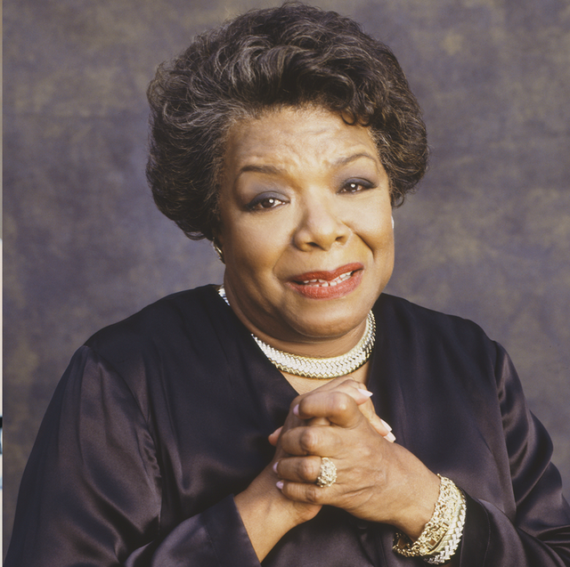

Maya Angelou
1928 - 2014

- My Early Life & Achievements
- I was an American poet, memoirist, and civil rights activist.
- My parents split up when I was a child.
- I was raised by my grandmother.
- I have published 36 books including autobiographies, books of essays, and poetry.
- I have received more than 50 honorary degrees.
- My first autobiography, I Know Why the Caged Bird Sings, received international acclaim.
- My Contributions
- I was active in the Civil Rights Movement.
- I worked with Martin Luther King Jr. and Malcolm X.
- I was named the first Reynolds Professor of American Studies at Wake Forest University.
- I was awarded the Presidential Medal of Freedom
- I recited my poem "On the Pulse of Morning" at the first presidential inauguration of Bill Clinton.
- My Challenges
- As a child, I experienced racial prejudices and discrimination in Arkansas.
- I was extremely insecure as a child, viewing myself as awkward, unwanted, and ugly because I was Black.
- I suffered sexual abuse at the hands of a family associate around the age of 7.
- When I was 8 years old, I stopped speaking. I silenced my voice because I thought my voice had killed a man.
- As a single teen mother at 16, I supported myself and my son by working as a waitress and cook.
- I was one of the most banned authors in US.
- My Thoughts on Life
- If you're always trying to be normal, you will never know how amazing you can be.
- People will forget what you said, people will forget what you did, but people will never forget how you made them feel.
- You alone are enough, you have nothing to prove to anybody.
- Nothing will work unless you do.
- Live as though life was created for you.
- Be a rainbow in someone else's cloud.